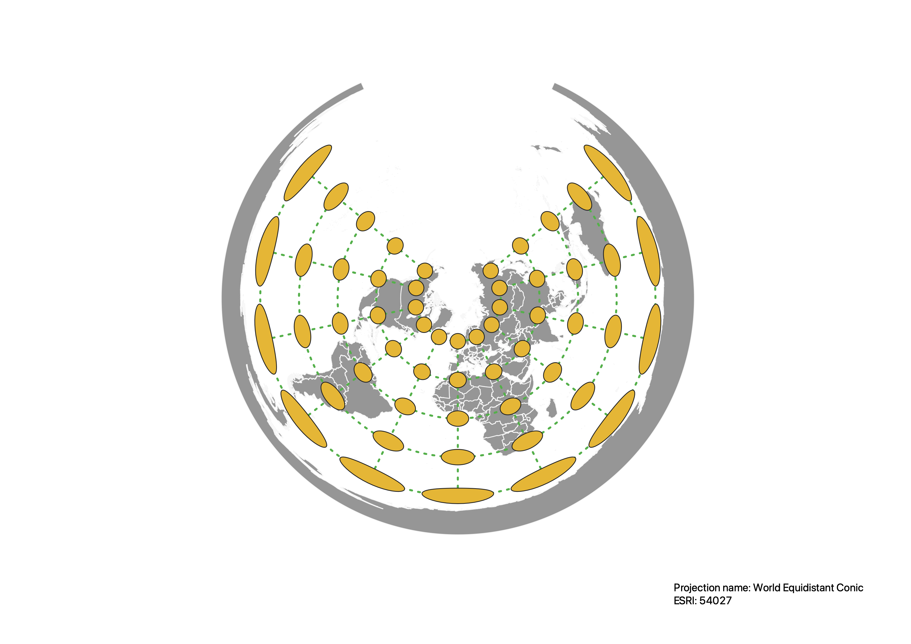
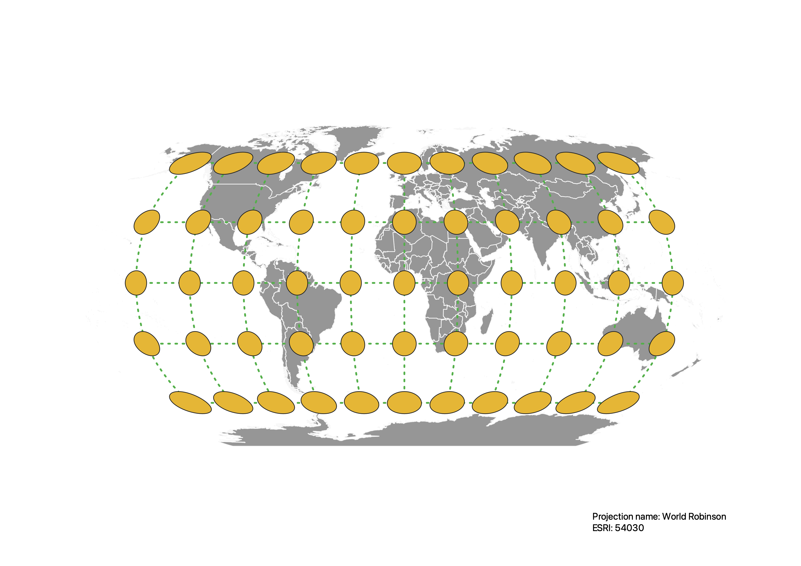

In this project I learned how to display images in different projections
Describe in your own words how you displayed the map in different projections using QGIS
In order to display the map in different projections using QGIS, I used the Project Coordinate Reference System (CRS) at the bottom right corner of the page.
From there I would search by projection name or EPSG/ESRI to apply the projection on my map. I also used the plugin called
Indicatrix mapper which uses constant radius ellipsoid caps. How the caps were displayed showed me the distortions in every map projection.
WGS84 Projection
In the WGS84 projection, shape and area are preserved until they become distored the closer they are to the poles.

Aitoff Projection
The Aitoff projection does not preserve shape or area. Like most map projections
the scale is accurate along the equator and meridian.

Psuedo Mercator Projection
Similar to the WGS84 projection, the Mercator projection distorts in shape and area as they get closer to the North and South pole.
Area distortions vary by latitude but maintains shape, area and distance closer to the equator.

Sphere Winkel I Projection
The Winkel projection distorts shape, area, distance and directions but maintains its accuracy closer to the equator.
We can see this since the shape and area isn't in uniform size as we increase latitude and longitude.

Equal Area Cyclindrical Projection
In the Equal Area projection, shape and area are severely distored at the poles. The
area near the equator are pretty accurate compared to the Earth.
World Equidistant Conic Projection
In this map, it is severely distored at the poles because conic projections don't consider the polar regions.
The closer you get to the prime meridian and equator, they are more true-to-scale.

North Pole Azimuthal Equidistant Projection
The Azimuthal projection is projected on what looks like a flat surface which preserves the distance, direction
and angles but severely distorts the opposite pole.

World Robinson Projection
In the Robinson projection, the shape area has some distortion as you move closer to the poles.
Distance and direction are distorted on this map. This is the map we always see, so I can tell
that its main use it to provide a visually appealing projection of the earth.

World Polyconic Projection
This Polyconic projection distorts shape, area, direction and angles. The closer
to the central meridian, the projection is free of distortion. There is less distortion
going from north to south than there is going east to west.

Data used for this project
Download Natrual Earth 1:10m Cultural Vector